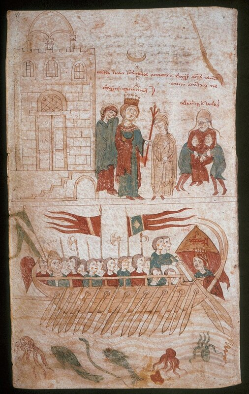
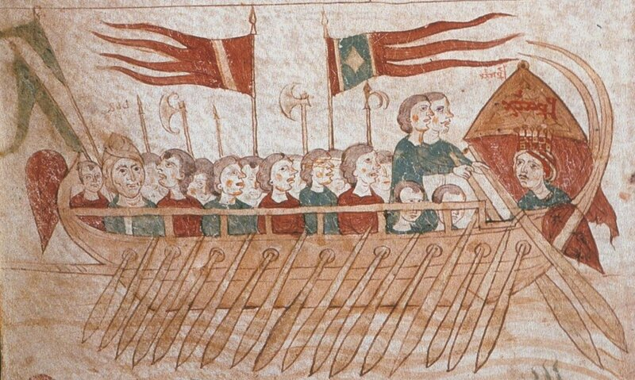

Галера из книги Петра Эболийского
Итак, перейдем к новому этапу в изображениях западноевропейских галер, который начался с появления на рубеже XII и XIII веков замечательных иллюстраций к поэме монаха из Эболи Петра, придворного поэта императора Священной Римской империи Генриха VI, которая называлась «Книга во славу императора, или о делах сицилийских» (Liber ad honorem Augusti sive de rebus Siculis). Поэма известна также под названием «Carmen de motibus Siculis». Основная ее часть была посвящена попытке Танкреда, незаконнорожденного сына Рожера III, захватить контроль над Сицилией. Право на Сицилию оспаривала жена Генриха VI Констанция Сицилийская, дочь Рожера II. Нас во всей этой истории будет интересовать эпизод с захватом Констанции в плен в Салерно и переправка ее на корабле к Танкреду на Сицилию. Этот эпизод сопровождается иллюстрацией интересной во всех отношениях.

Рассмотрим галеру, изображенную на этой иллюстрации, подробнее.

Этот корабль по системе гребли вроде бы не отличается от галер, изображенных в предыдущем посте. Однако есть существенное НО: оба ряда гребцов, т.е. и те, которые гребут через порты в бортах, и те, весла которых расположены поверх борта, явно сидят поверх палубы. А это принципиально важно. В дальнейшем мы подробно разберем конструкцию галеры, сейчас же только отметим, что палуба на галере, под которой сидел нижний ряд гребцов, отстояла от настила трюма лишь на столько, чтобы дать возможность гребцам сидеть. Встать во весь рост они не могли. А следовательно не могли и использовать ту систему гребли, при которой гребец встает при заносе весла и потом «вешает» всю тяжесть своего тела на весло, значительно увеличивая усилие при гребке. Новая система, изображенная у Петра из Эболи, как раз и позволила полностью использовать возможности новой разновидности гребли – системы alla sensile.
Самые ранние документы, которые подтверждают, что западноевропейские галеры имели полную палубу и использовали систему гребли alla sensile, датируются промежутком между 1269 и 1284 гг. и относятся к бумагам из канцелярии короля Сицилии Карла I Анжуйского. Анализ этих и последующих документов будет проведен в последующем, сейчас же мы добавим ложку дегтя в бочку меда так хорошо начатого рассказа о зарождении системы гребли alla sensile. Но сделаем это пакостное дело мы в следующий раз.